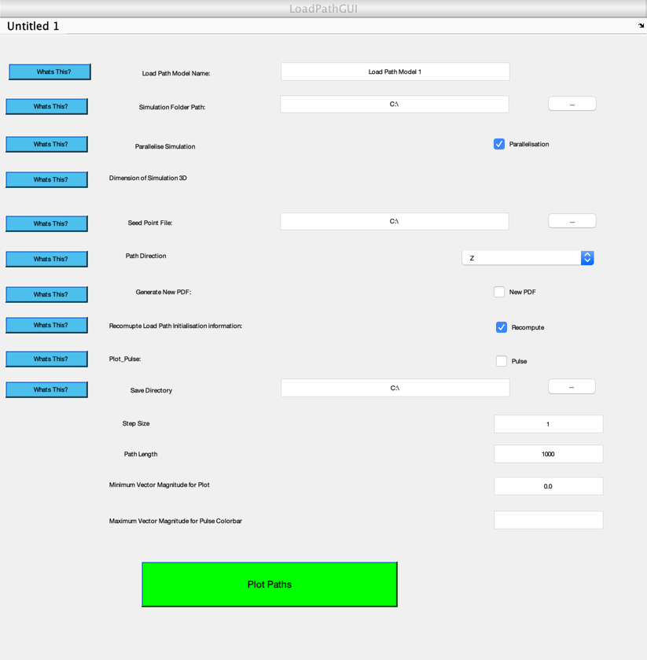

function varargout = LoadPathGUI(varargin)
gui_Singleton = 1;
gui_State = struct('gui_Name', mfilename, ...
'gui_Singleton', gui_Singleton, ...
'gui_OpeningFcn', @LoadPathGUI_OpeningFcn, ...
'gui_OutputFcn', @LoadPathGUI_OutputFcn, ...
'gui_LayoutFcn', [] , ...
'gui_Callback', []);
if nargin && ischar(varargin{1})
gui_State.gui_Callback = str2func(varargin{1});
end
if nargout
[varargout{1:nargout}] = gui_mainfcn(gui_State, varargin{:});
else
gui_mainfcn(gui_State, varargin{:});
end
function LoadPathGUI_OpeningFcn(hObject, eventdata, handles, varargin)
handles.output = hObject;
set(handles.checkbox1, 'value',1)
set(handles.edit3, 'String', 'Load Path Model 1')
set(handles.edit1, 'String', 'C:\')
set(handles.edit2, 'String', 'C:\')
set(handles.edit4, 'String', 'C:\')
set(handles.text15, 'String', 'Step Size')
guidata(hObject, handles);
function varargout = LoadPathGUI_OutputFcn(hObject, eventdata, handles)
varargout{1} = handles.output;
function cmd_getDir_Callback(hObject, eventdata, handles)
folder_name = uigetdir(handles.edit1.String, 'Select Folder Containing Simulation Files');
set(handles.edit1, 'String', folder_name)
handles.cmd_getDir.UserData = sim_folder_check(folder_name);
function edit1_Callback(hObject, eventdata, handles)
function edit1_CreateFcn(hObject, eventdata, handles)
if ispc && isequal(get(hObject,'BackgroundColor'), get(0,'defaultUicontrolBackgroundColor'))
set(hObject,'BackgroundColor','white');
end
function checkbox1_Callback(hObject, eventdata, handles)
function popupmenu1_Callback(hObject, eventdata, handles)
contents = cellstr(get(hObject,'String'));
contents{get(hObject,'Value')};
function popupmenu1_CreateFcn(hObject, eventdata, handles)
if ispc && isequal(get(hObject,'BackgroundColor'), get(0,'defaultUicontrolBackgroundColor'))
set(hObject,'BackgroundColor','white');
end
function pushbutton4_Callback(hObject, eventdata, handles)
[file_name, path_dir] = uigetfile({'*.txt'}, 'Select Seed Point File');
set(handles.edit2, 'String', [path_dir file_name])
handles.pushbutton4.UserData = seed_point_check([path_dir file_name]);
function edit2_Callback(hObject, eventdata, handles)
function edit2_CreateFcn(hObject, eventdata, handles)
if ispc && isequal(get(hObject,'BackgroundColor'), get(0,'defaultUicontrolBackgroundColor'))
set(hObject,'BackgroundColor','white');
end
function popupmenu2_Callback(hObject, eventdata, handles)
function popupmenu2_CreateFcn(hObject, eventdata, handles)
if ispc && isequal(get(hObject,'BackgroundColor'), get(0,'defaultUicontrolBackgroundColor'))
set(hObject,'BackgroundColor','white');
end
function checkbox2_Callback(hObject, eventdata, handles)
function checkbox3_Callback(hObject, eventdata, handles)
function pushbutton5_Callback(hObject, eventdata, handles)
h = helpdlg(['The Load Path program has been optimised to output a set of'...
' initialising data in the event that the user would like to select new'...
' seed locations. This greatly speeds up subsequent plots.'...
newline newline...
'If the underlying model has been modified then the user'...
' will need to select this option, as this data will need to be recomputed.'...
' If this is the first time this model has had load paths plotted, there'...
' is no need to select this option.'],'Recomputing Data');
help_dialog_settings(h)
function pushbutton6_Callback(hObject, eventdata, handles)
h = helpdlg(['By default the Load Path program will output a simple PDF '...
'of the path plots. If the user would like to plot paths at '...
'different seed locations, the program will overwrite the previous '...
'PDF.'...
newline newline...
'Select this option if the previous PDF is to be retained. New '...
'PDF''''s will have the same file name but with the date and '...
'time appended to the end of the name in the following structure:'...
newline newline...
'"''Output File Name - Path Direction\_HH.MM.SS\_dd/mm/yy''"'],...
'Generating New PDF''''s');
help_dialog_settings(h)
function pushbutton7_Callback(hObject, eventdata, handles)
helpmessage = ...
['The path direction should be selected in the relative to the '...
'model''''s coordinate system. ' newline newline...
'\bfNote:\rm Keep in mind that paths '...
'that do not exit the model space at a reaction point will eddy.'...
'When paths eddy, they will proceed to keep being computed '...
'until the upper limit of the path length is reached leading to '...
'longer run times.'...
];
h = helpdlg(helpmessage, 'Path Direction''''s');
help_dialog_settings(h)
function pushbutton8_Callback(hObject, eventdata, handles)
helpmessage = ...
['The Seed Point file is a text file that dictates where the '...
'load paths will initiate from. Future developements will allow '...
'the user to interactively select seed locations in a MATLAB '...
'figure as well as load a file of seed locations.'...
newline newline...
'The format of the seed file for \itn\rm number of points is:'...
newline newline...
'X_1, Y_1, Z_1'...
newline...
'X_2, Y_2, Z_2'...
newline...
' \ldots' newline newline...
'X_n, Y_n, Z_n'...
];
h = helpdlg(helpmessage, 'Seed Point Files');
help_dialog_settings(h)
function pushbutton9_Callback(hObject, eventdata, handles)
helpmessage = ...
['The dimension of the simulation refers to whether the model is '...
'two or three dimensional. AIAA - V1 only 3D.'...
];
h = helpdlg(helpmessage, 'Dimension of Simulation');
help_dialog_settings(h)
function pushbutton10_Callback(hObject, eventdata, handles)
helpmessage = ...
['The Load Path program has been developed to allow clustering '...
'and general parallel processing.'...
'If this option is selected the simulation will parallelise to '...
'a default of four slave workers. This drastically improves '...
'the performance.' newline...
'However, it is recommended to run the program '...
'with a single seed point first as MATLAB requires an intial '...
'run of the code to perform optimally with parallelisation.'...
newline newline ...
'The default is on.'...
];
h = helpdlg(helpmessage, 'Dimension of Simulation');
help_dialog_settings(h)
function pushbutton11_Callback(hObject, eventdata, handles)
helpmessage = ...
['The simulation folder path is the directory where the core '...
'simulation files are stored. It will typically look like: '...
newline newline...
'\itC:Sample Simulation\\Sample Simulation\_files\\dp0\\SYS-X\\MECH\rm'...
newline newline...
'The \it"SYS-X"\rm part of the file path refers to the system within '...
'the ANSYS simulation. The user may have renamed the systems '...
'within simulation, therefore it is important to check that'...
' the directory points to the correct system.'...
newline newline...
'This directory should contain all the files relavent to the load '...
'path program. These files specifically are:\it' newline newline...
'ds.dat' newline...
'nodeInfo.txt' newline...
'elInfo.txt' newline...
'NodalSolution.txt\rm' newline...
];
h = helpdlg(helpmessage, 'Dimension of Simulation');
help_dialog_settings(h)
function help_dialog_settings(handle)
text_handle = handle.Children(3).Children;
text_handle.Interpreter = 'tex';
text_handle.FontName = 'Cambria';
text_handle.FontSize = 10;
buffer = 7;
chi_extent = text_handle.Extent;
par_pos = handle.Position;
new_pos_x = (chi_extent(3)+chi_extent(1));
new_pos_y = (chi_extent(4)+chi_extent(2));
handle.Position(3) = new_pos_x+buffer;
handle.Position(4) = new_pos_y+buffer;
function edit3_Callback(hObject, eventdata, handles)
function edit3_CreateFcn(hObject, eventdata, handles)
if ispc && isequal(get(hObject,'BackgroundColor'), get(0,'defaultUicontrolBackgroundColor'))
set(hObject,'BackgroundColor','white');
end
function pushbutton13_Callback(hObject, eventdata, handles)
helpmessage = ...
['Please choose a title for the load path model. Do not append '...
'the load path direction or other information other than the title '...
'as these are added automatically in the output files.'...
];
h = helpdlg(helpmessage, 'Choosing a Title');
help_dialog_settings(h)
function checkbox4_Callback(hObject, eventdata, handles)
function pushbutton14_Callback(hObject, eventdata, handles)
helpmessage = ...
['Turn this option on if plotting pulse. '...
'Code will create seeds and define minimum and maximum for plot of pulse.'
];
h = helpdlg(helpmessage, 'Plotting Pulse');
help_dialog_settings(h)
function pushbutton15_Callback(hObject, eventdata, handles)
folder_name = uigetdir('C:\', 'Select Save Directory');
set(handles.edit4, 'String', folder_name)
function edit4_Callback(hObject, eventdata, handles)
function edit4_CreateFcn(hObject, eventdata, handles)
if ispc && isequal(get(hObject,'BackgroundColor'), get(0,'defaultUicontrolBackgroundColor'))
set(hObject,'BackgroundColor','white');
end
function pushbutton16_Callback(hObject, eventdata, handles)
helpmessage = ...
['The default save directory is the C: drive. Select an alternative '...
'directory to save the output files and results.'...
newline newline...
'\bfNote:\rm Ensure the "data_*.mat" data file is in the save '...
'directory if you are wanting to reuse the initilaisation data from '...
'a previous simulation. Otherwise this information will be '...
'recalculated, extending runtimes.'
];
h = helpdlg(helpmessage, 'Save Directory Selection');
help_dialog_settings(h)
function [retval] = sim_folder_check(sim_dir)
retval = 1;
req_files = {'ds.dat','nodeInfo.txt','nodalSolution.txt'};
if ~exist(sim_dir, 'dir')
retval = 0;
errmsg = ['The directory does not exist or is not a folder.'...
newline newline...
'See "What''''s This?" for details on how to fill this field.'];
end
listing = dir(sim_dir);
file_list = {listing.name};
num_files = size(intersect(file_list,req_files),2);
if sum(num_files) <length(req_files)
retval = 0;
errmsg = ['The appropriate files cannot be found. '...
'Ensure all required files are available and '...
'named according to the help directions.'...
newline newline...
'See "What''''s This?" for details.'];
end
if ~retval
e = errordlg(errmsg,'File Error');
help_dialog_settings(e)
end
function [retval] = seed_point_check(seed_dir)
retval = 1;
errmsg = '';
if ~exist(seed_dir, 'file')
retval = 0;
errmsg = ['The file does not exist.'...
newline newline...
'See "What''''s This?" for details on how to fill this field.'];
end
if ~retval
e = errordlg(errmsg,'File Error');
help_dialog_settings(e)
end
function pushbutton12_Callback(hObject, eventdata, handles)
if ~handles.cmd_getDir.UserData
errmsg = ['The appropriate files cannot be found. '...
'The simulation cannot be started without the correct files. '...
'Please select the correct Simulation Folder Path.'...
newline newline...
'See "What''''s This?" for details.'];
e = errordlg(errmsg,'File Error');
help_dialog_settings(e)
return
end
if ~handles.pushbutton4.UserData
errmsg = ['Please ensure the appropriate seed file is selected.'...
'The simulation cannot be started without the correct files. '...
newline newline...
'See "What''''s This?" for details.'];
e = errordlg(errmsg,'File Error');
help_dialog_settings(e)
return
end
if ~step_size_error_check(handles.edit5)
return
end
if ~path_length_error_check(handles.edit6)
return
end
dimension = '3D';
model_name = handles.edit3.String;
pulse = handles.checkbox4.Value;
parallel = handles.checkbox1.Value;
newPDF = handles.checkbox2.Value;
recompute = handles.checkbox3.Value;
sim_dir = handles.edit1.String;
seed_dir = handles.edit2.String;
save_dir = handles.edit4.String;
path_dir = handles.popupmenu2.String{handles.popupmenu2.Value};
step_size = handles.edit5.UserData;
path_length = handles.edit6.UserData;
plot_minimum_vector = handles.edit7.UserData;
plot_maximum_vector = handles.edit8.UserData;
Run_Solve_loadpath3D(...
sim_dir, seed_dir, save_dir, model_name,path_dir,...
pulse, parallel, newPDF,recompute, step_size, path_length,...
plot_minimum_vector, plot_maximum_vector);
function edit5_Callback(hObject, eventdata, handles)
if step_size_error_check(hObject)
hObject.UserData = str2double(get(hObject,'String'));
end
function edit5_CreateFcn(hObject, eventdata, handles)
if ispc && isequal(get(hObject,'BackgroundColor'), get(0,'defaultUicontrolBackgroundColor'))
set(hObject,'BackgroundColor','white');
end
function edit6_Callback(hObject, eventdata, handles)
if path_length_error_check(hObject)
hObject.UserData = str2double(get(hObject,'String'));
end
function [ret] = path_length_error_check(hObject)
ret = 0;
if isempty(get(hObject,'String'))
return
end
path_length = str2double(get(hObject,'String'));
if isnan(path_length) ||~floor(path_length) == path_length || path_length <= 0
errmsg = ['The the path length must be a positive real integer.'...
newline newline...
'See "What''''s This?" for details.'];
e = errordlg(errmsg,'Path Length');
help_dialog_settings(e)
end
ret = 1;
function [ret] = step_size_error_check(hObject)
ret = 0;
if isempty(get(hObject,'String'))
return
end
step = str2double(get(hObject,'String'));
if isnan(step) || step<=0
errmsg = ['The step size must be a positive real number.'...
newline newline...
'See "What''''s This?" for details.'];
e = errordlg(errmsg,'Step Size Error');
help_dialog_settings(e)
end
ret = 1;
function edit6_CreateFcn(hObject, eventdata, handles)
if ispc && isequal(get(hObject,'BackgroundColor'), get(0,'defaultUicontrolBackgroundColor'))
set(hObject,'BackgroundColor','white');
end
function edit7_Callback(hObject, eventdata, handles)
function edit7_CreateFcn(hObject, eventdata, handles)
if ispc && isequal(get(hObject,'BackgroundColor'), get(0,'defaultUicontrolBackgroundColor'))
set(hObject,'BackgroundColor','white');
end
function edit8_Callback(hObject, eventdata, handles)
function edit8_CreateFcn(hObject, eventdata, handles)
if ispc && isequal(get(hObject,'BackgroundColor'), get(0,'defaultUicontrolBackgroundColor'))
set(hObject,'BackgroundColor','white');
end
